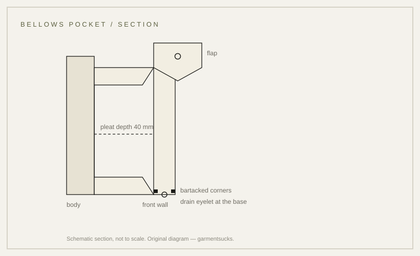

details · 1942
The bellows pocket: a pleat that adds volume
A pocket that grows: a pleat at the side lets the pocket expand when it is loaded.
probable Published 2026-11-13 · last checked 2026-11-13

1. Summary
A bellows pocket is a patch pocket with a pleat folded into its side, so the front wall can move away from the body when the pocket is full and lie flat when it is empty.
The M-1942 is recorded with four expandable cargo pockets; the parachute-stress story is repeated by dealers rather than documented. Confidence: probable — the museum records support the expandable pocket, but not the failure story.
2. What this is
Bellows pocket: a patch pocket whose side edge is folded into a pleat, giving volume. Pleat: a fold of cloth pressed and stitched so it opens when pulled. Bartack: a dense bar of stitches at a stress point.
3. Origin and context
The M-1942 parachutist jacket is recorded with four expandable cargo pockets. The tropical uniform introduced in 1963 was based closely on that jacket, and its trousers carry large expandable cargo pockets with concealed two-button flaps.
Which garment first carried an expanding pocket was not found in an opened source.
4. How it works
The pleat adds cloth at the pocket's side. When the pocket is loaded the fold opens; when empty it lies flat. Capacity increases without adding a rigid gusset, and the pocket stays flat against the thigh.
The load concentrates at the four corners, which is why the corners are bartacked.
5. Construction
The pocket is cut with extra cloth at the side, folded into a pleat and pressed, then attached to the garment before the side seam is closed. The flap is set over the mouth and buttons down.
Work order inferred from garment construction; no document opened for this card states it.
6. Variants
| Variant | Garment | Difference |
|---|---|---|
| Expandable cargo pocket | M-1942 parachutist jacket | four pockets, pleated expansion |
| Cargo pocket with concealed buttons | TCU trousers, Type III | large expandable pockets, concealed two-button flaps |
| Bellows patch pocket | civilian field jackets | one pleat, flap, no cargo function |
| Flat patch pocket | shirts | no pleat, no expansion |
Competing accounts
A common account says M-1942 pockets blew out under parachute-opening shock and were reinforced by riggers before D-Day. The object records describe expandable pockets but do not mention the failure. A period rigger order or a damaged original would settle it; the evidence currently supports only that the pockets were expandable.
| Account | Source (tier) | What it claims | Evidence offered | Weak point |
|---|---|---|---|---|
| Dealer/collector account | T3 | Pockets failed under parachute shock and were reinforced in the field | collector narrative | no document or object cited |
| Museum object records | T1 | M-1942 has four expandable cargo pockets | catalogue description | silent on failure or repair |
7. Telling an original from a reproduction
Turn the pocket inside out or run a finger down the side edge: two pressed fold lines that open into the pocket body. Corners should be bartacked. A reproduction may print a pleat line or omit the fold entirely.
8. Common mistakes
Treating a shallow crease as a pleat; assuming the pleat is decorative; buying a 'cargo pocket' that is a flat patch with a flap. A pleat that does not open under load is a seam allowance, not a bellows pocket, and will not take the load a field pocket is asked to carry.
9. How to read it in wear
An empty expanding pocket lies flat; loading it changes the silhouette at the thigh before it changes the shoulder line. On a jacket worn over a belt, a full pocket pushes the flap outward and shortens the visible line of the hip, which is why field photographs often show the cargo pockets sagging below the waist seam.
10. Modern designer trail
The cargo pocket is one of the most borrowed field details in streetwear, usually with the pleat kept and the bartacks lost.
11. Specification
Recorded figures only on the left; the right column is a reproduction suggestion.
| Recorded in sources | Reproduction suggestion |
|---|---|
| M-1942: four expandable cargo pockets (museum record, excerpt) | Pleat depth 30–40 mm |
| TCU trousers: large expandable cargo pockets, concealed two-button flaps (IWM, excerpt) | Pocket 18 × 20 cm, bartack at four corners |
| Which garment first used an expanding pocket: not found | — |
12. Questions and exercises
1) Does the pocket lie flat when empty? 2) Can you find two fold lines at the side? 3) Are the corners bartacked?

Glossary
- Bellows pocket
- Patch pocket with a side pleat that expands.
- Pleat
- Pressed fold that opens when pulled.
- Bartack
- Dense bar of stitches at a stress point.
- Cargo pocket
- Large patch pocket, usually on the thigh.
Sources
Claims & sources
| Claim | Source | Tier | URL | Status |
|---|---|---|---|---|
| M-1942 has four expandable cargo pockets | Musée de l'Armée object record | T1 | link | partially verified (excerpt) |
| TCU trousers have large expandable cargo pockets with concealed two-button flaps | IWM 30150059 | T1 | link | partially verified (index excerpt) |
| Pockets failed under parachute-opening shock and were reinforced by riggers | Collector/dealer account | T3 | unverified | |
| Pleat depth 30–40 mm; pocket 18 × 20 cm | site reproduction suggestion | — | working specification |